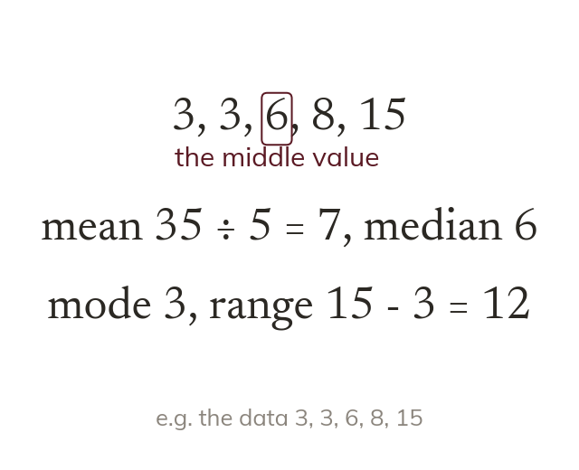

Three averages and a spread
The mean shares the total equally. The median is the middle value once ordered, the mode the most common. The range, largest minus smallest, measures spread.
The mean shares the total equally, the median is the middle value once ordered, and the mode is the most common value. The range, largest minus smallest, measures spread rather than a typical value.